Digital Matter · Parametricism in 2.5D
Carapace
Aaron Wajah & Mustafa Bakir
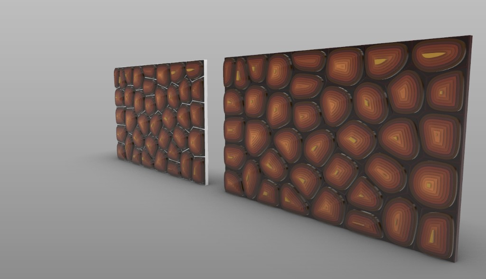
Concept and Inspiration
A tortoise shell is more than a protective covering. Look closely, and its surface reveals a collection of interlocking plates, each marked by ridges that trace years of gradual growth. These patterns are not simply decorative. They emerge from a biological process in which structure develops slowly, layer by layer.
This became the starting point for Carapace, a parametric design project inspired by the geometry of tortoise shells and the relationship between growth, time, and form.
The idea was to understand how nature builds complexity through repetition. Using Rhino and Grasshopper, we translated the shell’s arrangement of scutes into Voronoi cells, refining their distribution through Lloyd’s algorithm to achieve a more balanced, organic structure. Each cell was then developed through concentric offsets and stepped elevations, recreating the layered ridges characteristic of a growing shell.
Imperfection mattered, too. Natural growth rarely follows perfectly straight lines or uniform proportions. We explored controlled irregularities in the geometry, allowing subtle variations to interrupt the precision of the underlying mathematical system. Gradients of earthy oranges and dark browns further emphasized the depth of each layer, referencing the weathered appearance of a tortoise shell.
Can we design the process of growth rather than just imitate its final form?
It is a question that opens up possibilities for using computational design to explore how natural structures develop, adapt, and acquire their distinct character over time.
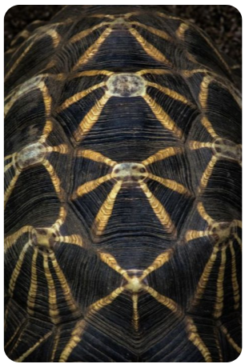
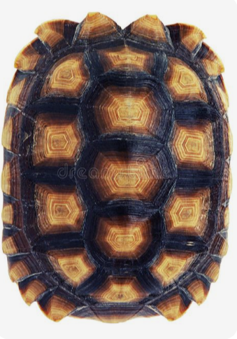
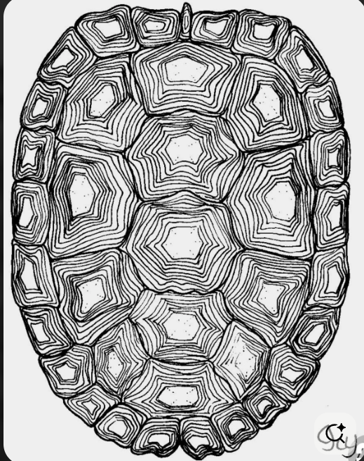
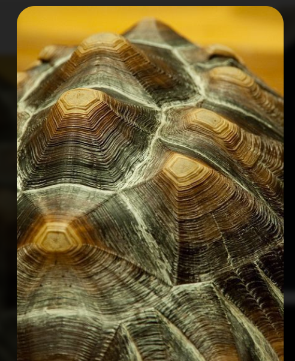
Final Render
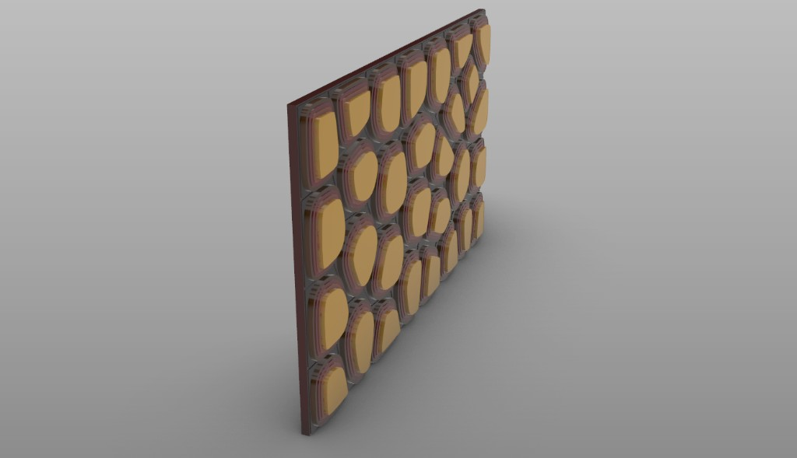
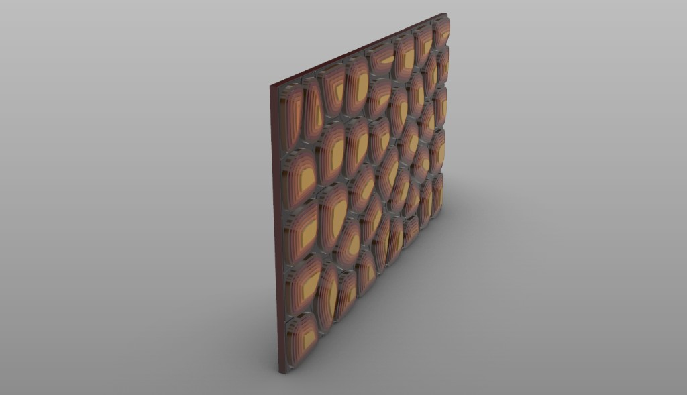

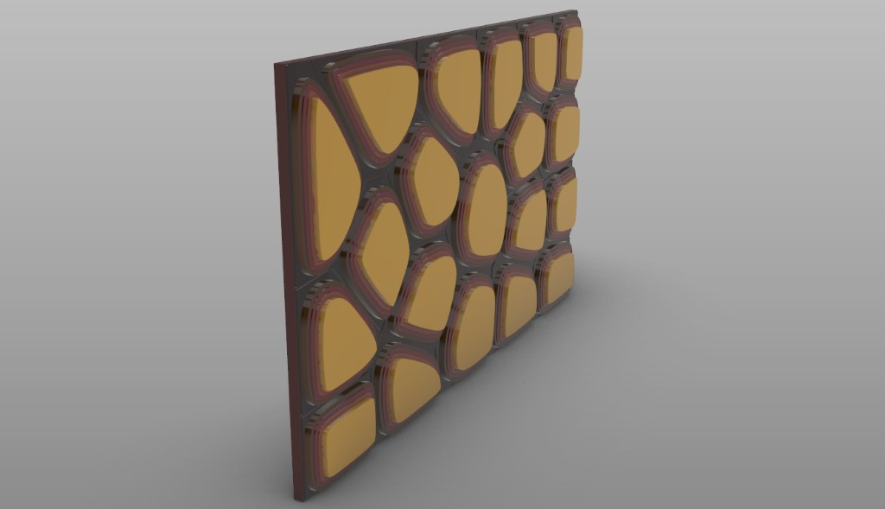
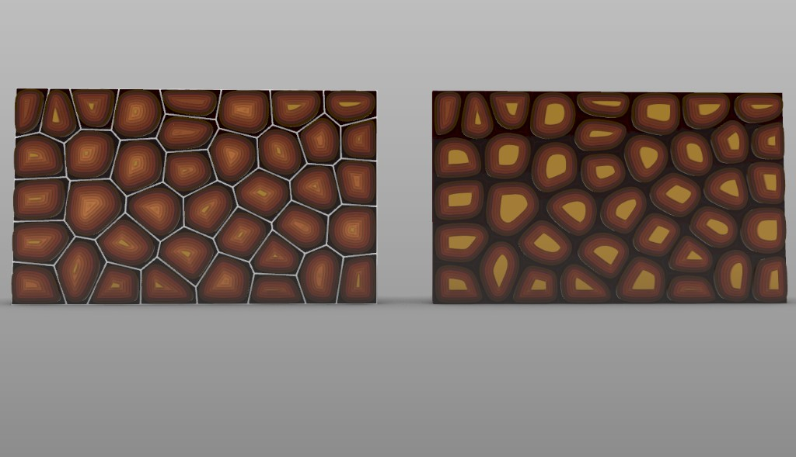

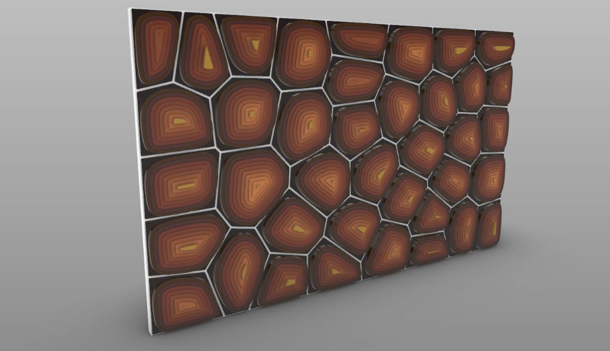
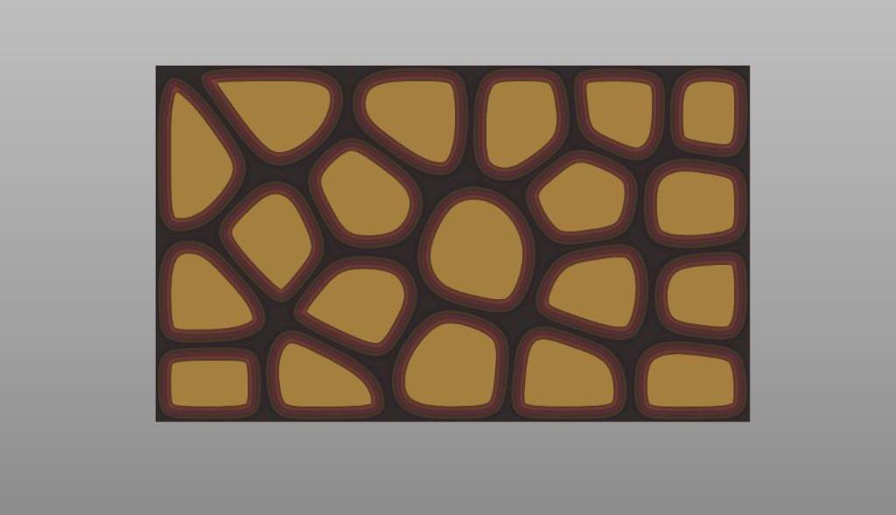


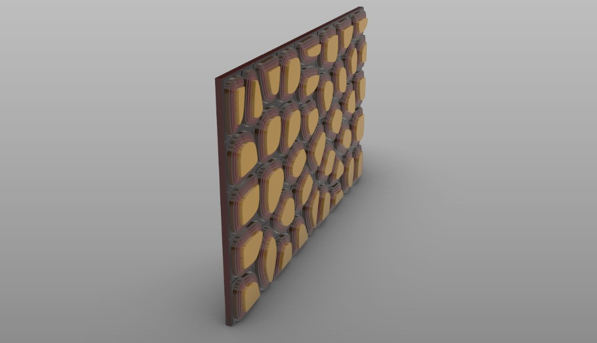

Development Process
03 · Base geometry
Lloyd’s Algorithm
Lloyd’s algorithm produces a centroidal Voronoi tessellation. Given a set of seed points, it builds the Voronoi cells that claim every surrounding location, then moves each seed to the geometric center of its own cell. That step is repeated.
With every pass, cells become more even in area, boundaries settle, and the packing loses the awkwardness of a random start. The same iterative pressure is what Grasshopper was doing when the Voronoi component was looped four times to relax the colony — and what natural scutes approximate as they compete for space over time.
Stack · Layering
Years, not a loft
Concentric offsets grow inward from each Voronoi polygon. A series sets how many rings; a second series plus Move builds the stacking order.
A continuous loft between rings would yield an inaccurate, smooth dome. So the curves are extruded into discrete, solid tiers — the ridges of sequential growth cycles.
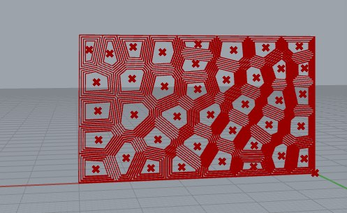
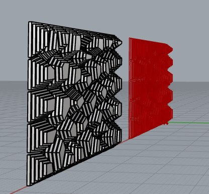
Pigment · Color mapping
Height becomes color
Z-axis elevation for every tier is normalized into a 0–1 domain, then a custom gradient is mapped across it. Dark, weathered tones settle on the lowest bases; brighter tones claim the peaks. Pigment is not painted. It is earned by height.
Raise the elevation. The stack starts grey. Base weathers brown; the peak goes yellow.
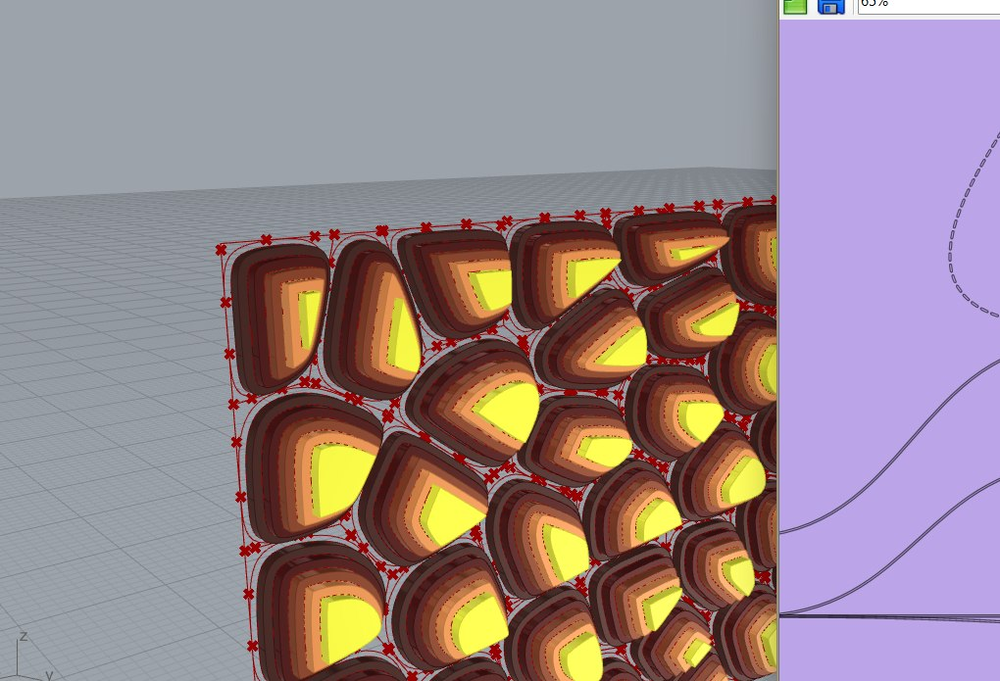